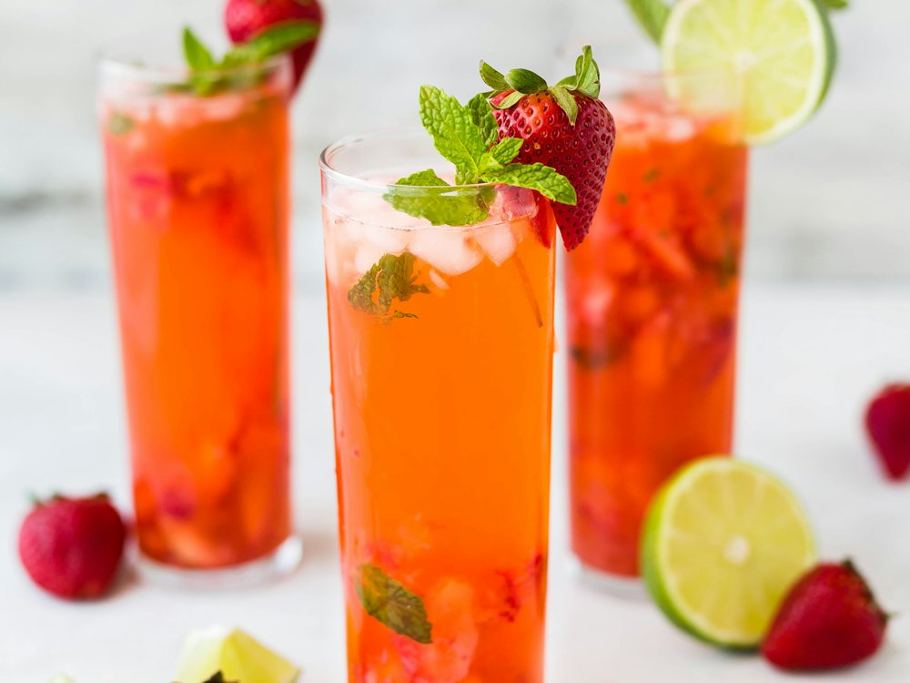

Домашний
Бар · Коктейльный бар · Алматы
Рейтинг 2ГИС
★ 4.7
412 оценок
Год открытия
нет данных
в открытых источниках не нашли
Средний чек
≈9 000 ₸
оценка по типу заведения
Адрес и часы
📍 БЦ Altstadt, пр. Назарбаева, 120, Алматы · Медеуский район
🕒 часы работы уточняются — смотрите в 2ГИС
Удобства
О заведении
Маленький коктейльный бар с танцполом, в списке Top 500 Bars 2026.